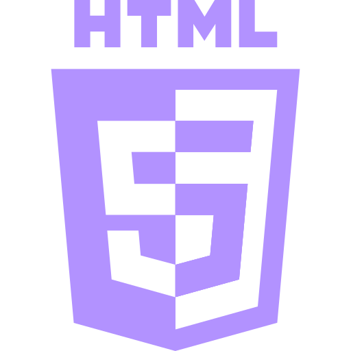

Antonio Elias 👋 Minhas Techs
- 
- 
- 
Sobre Mim
Desde pequeno, eu, sempre muito curioso, tive facilidade e habilidades com aparelhos eletrônicos e digitais, o que me despertou interesse na área da informática. Por esse anseio, cursei o técnico em informática, em uma escola de ensino profissionalizante. Durante 3 anos aprendi sobre os mais diversos assuntos que englobam esse mundo tão vasto que é a Computação, aprendendo desde a gestão de projetos ao desenvolvimento Web. Nos últimos 6 seis meses de curso, encarei a minha primeira oportunidade de estágio, dentro de uma empresa cunho internacional, a Vicunha Têxtil S/a. Onde tive uma experiência muito enriquecedora e vasta, tendo em vista a diversidade de operações possíveis dentro de uma multinacional. Essa oportunidade, apenas serviu para impulsionar a minha entrada em uma faculdade na área da TI.
Durante esse período de estágio, me preparei para o vestibular, e alcancei minha vaga, em uma Faculdade Federal (IFCE), no Curso de Ciências da Computação, no campus de Maracanaú, minha cidade, na qual estou cursando e adquirindo muitos conhecimentos. Além da graduação, também estou cursando Inglês, no Centro de Línguas , devido a importância desse idioma em nosso dia a dia.
Linguagens e Ferramentas
0 +Projetos
0 +Experiência
0 anoTechs que uso no dia a dia
Projetos
 16.16.04_c402475e.jpg)
Projeto Desenvlvido com o Objetivo de praticar e abranger conhecimentos em HTML e CSS, que consiste na ideia hipotetica na venda de Bicicletas elétricas em um E-commerce.
Veja Projeto 15.47.52_e9a3a849.jpg)
Projeto Desenvlvido com o Objetivo de praticar e abranger conhecimentos em HTML, CSS, JavaScript, que consiste na ideia de um site informativo sobre animais, considerado fantasticos
Veja Projeto 16.59.09_b0042de3.jpg)
Projeto Desenvlvido com o Objetivo de praticar e abranger conhecimentos em HTML e CSS, que consiste na ideia Hipotetica de um PortFolio online de um WEB Dev
Veja Projeto
Desafio Desenvlvido para a pratica de conhecimentos em HTML e CSS, que consiste em um tela de Login
Veja ProjetoCurriculum
Formação Acadêmica
Bacheralado em Ciências da Computação
Instituto Federal de Educação, Ciência e Tecnologia do Ceará - IFCE2023 - Em curso
Escolher um curso como Ciência da Computação é como entrar em um mundo de possibilidades infinitas. Me encantei com a tecnologia e como ela pode transformar o nosso dia a dia. A computação é mais do que apenas programação, é uma forma de pensar, de resolver problemas e de criar soluções para problemas de forma inovadora.
Técnico em informática
EEEP Raimundo Célio Rodrigues2020 - 2022
O Curso Técnico em Informática é uma excelente oportunidade para quem busca uma formação sólida na área de tecnologia. Com duração de 3 anos, este curso é destinado a pessoas que querem concluir o ensino médio e desejam adquirir conhecimentos específicos para atuar no mercado de trabalho.
Idiomas - Inglês
Centro de Línguas2023 - Em curso
Durante o curso, busco aprimorar minha capacidade de compreender e produzir textos complexos, participar de atividades de conversação para melhorar minha oralidade e aprimorar meu vocabulário em diversos contextos. Este curso me proporciona uma base sólida no idioma e me prepara para interagir eficientemente em ambientes profissionais e acadêmicos onde o inglês é a língua principal.
Experiência Profissional
Front-End Dev
Núcleo de Desenvolvimento de Software (NDS)2024 - Em curso
O NDS é um Laboratório de desenvolvimento de sistemas de renome
dentre o meio acadêmico, um local que visa a integração e
participação de todos ali inseridos, buscando assim o crescimento
profissional de todos os envolvidos.
Este meu estágio
voluntário em desenvolvimento front-end, onde tenho a oportunidade
de mergulhar no mundo da programação web. Irei participar em
projetos, onde posso aplicar meus conhecimentos em HTML, CSS e
JavaScript para criar interfaces responsivas e interativas. A
experiência é enriquecedora, proporcionando um ambiente de
aprendizado prático e a chance de trabalhar em equipe, aprimorando
minhas habilidades técnicas e de comunicação. Este estágio reforça
meu interesse pela área e me motivou a continuar buscando
conhecimento e crescimento profissional na área de desenvolvimento
front-end.
Estágio em TI
Vicunha Têxtil S/aAgosto a Novembro - 2022
Reconhecida mundialmente pelos elevados padrões de qualidade e
sustentabilidade, a Vicunha é uma multinacional brasileira
presente na América Latina, Europa e Ásia. Com mais de 50 anos de
mercado, é referência global em soluções jeanswear.
Criação
de usuário em sistemas locais, manutenção via base de dados,
comunicação entre usuários da empresa, resolução de problemas de
TI, criação de relatórios com base em dados vindo de cosultas via
base de dados, estas atividades estavam dentro do meu plano de
atuação.